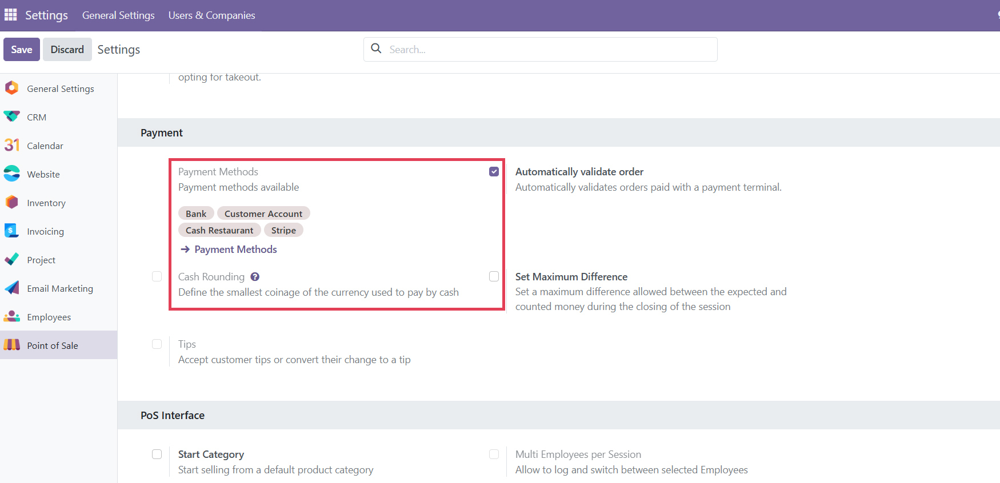
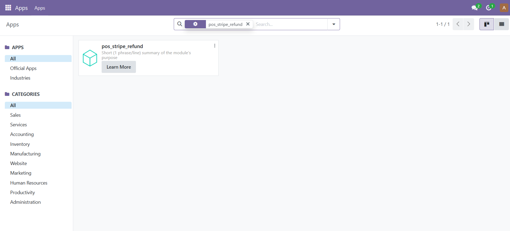
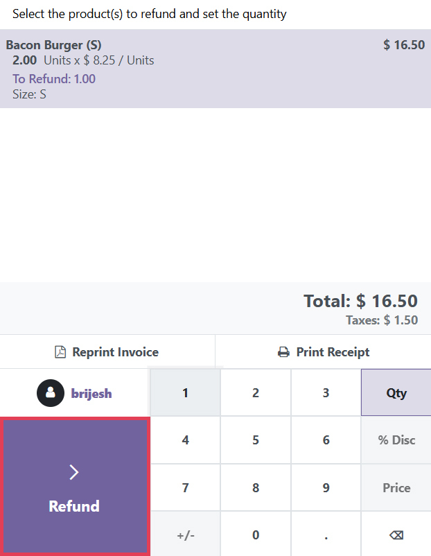
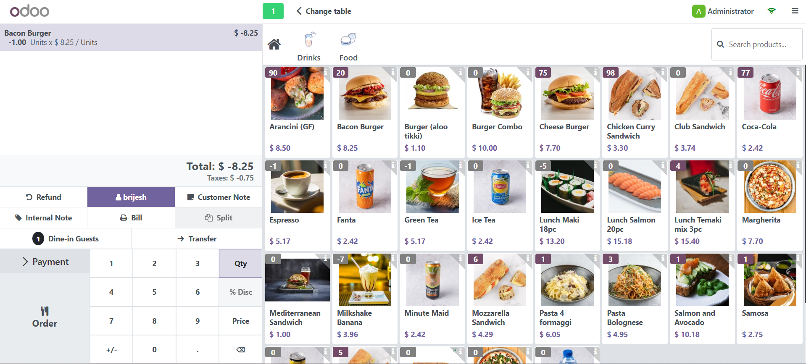
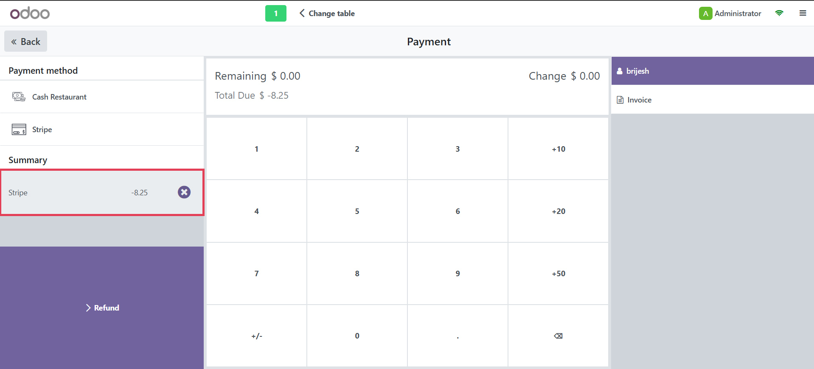

Step-by-Step Implementation Guide
Step 1: Set Up the POS and Restaurant Modules
Before implementing the POS Stripe Refund module, ensure your Odoo POS system is properly configured:
- Log in to your Odoo Dashboard
- Navigate to the Apps module
- Search for and install the Point of Sale and Restaurant modules
- Configure your POS settings including restaurant layout, products, and user preferences

Step 2: Configure Stripe on Odoo POS
Integrate Stripe with your Odoo POS system by following these steps:
- Go to Point of Sale → Configuration → Payment Methods
- Click Create to add a new payment method
- Set the name as "Stripe"
- Select Stripe Payment Gateway in the corresponding field
- Enter your Stripe API keys (publishable key and secret key)
- Click Save to complete the configuration
Step 3: Install the POS Stripe Refund Module
Install the POS Stripe Refund module to enable refund functionality:
- Go to the Apps menu in your Odoo dashboard
- Click on Update Apps List to refresh available modules
- Search for "POS Stripe Refund"
- Click Install to add the module to your system
- After installation, restart your POS session to apply the changes


Step 4: Choose the Order to Refund
To process a refund, first locate and select the order:
- Open your POS interface and click on the Refund button
- Browse through the list of orders displayed on the refund screen
- Select the specific order you want to refund
- Choose the items and quantities to be refunded
- Click Confirm to proceed with the refund
Step 5: Go to the Payment Section
After selecting the order, proceed to the payment section:
- The system will automatically create a refund order with negative amounts
- Review the refund details to ensure accuracy
- Click on the Payment button to proceed to payment processing


Step 6: Choose Stripe and Process the Refund
Complete the refund process using Stripe:
- Select Stripe as the payment method
- Verify the refund amount is correct
- Click on the Refund button to process the transaction
- The system will communicate with Stripe to process the refund
- Wait for confirmation that the refund has been processed
Step 7: Verify the Refund in the Order Section
After processing the refund, verify its status:
- Navigate to the Orders section in the POS interface
- Locate the refunded order, which will be marked accordingly
- Check that the refund status shows as Completed
- Verify that the refund amount matches what was processed